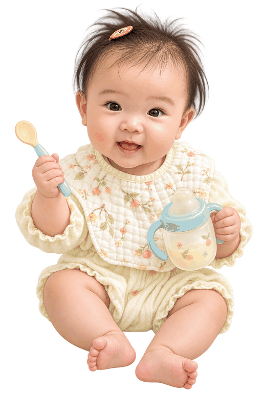

给 Avery 的小小升级课 ♡
奶奶继续做主角，
辅食慢慢认识世界。
今天只记住 3 件事：慢慢转奶、温柔试米糊、口渴就给几口水。
✦
✧

慢慢来，Avery 做得到！
今日任务 · 0/3
做到这里，就已经很棒啦 🌼
0/3
01先做奶奶的转换
2 段奶粉，一天一次慢慢改
不需要一天之内全部换掉，先从一餐开始。节奏跟着 Avery 的反应走。
🌱
先换一餐
一天一次，慢慢把这一餐换成 2 段奶粉。Avery 适应后，再按医生安排继续。
02再认识第一口米糊
用奶冲米粉，稀稀地开始
选择 Avery 精神比较好的一顿。先学会吞咽，分量不需要一次吃完。
～
150 ml1–2 勺
用一顿精神比较好时的奶，冲好奶后调成稀稀的米糊。先试一两勺，不需要一次吃完。
🥄用勺喂，不要把米粉放进奶瓶♡
03水水小补给
不需要逼，愿意喝就喝
加辅食后，可以分几次提供约 100–200 ml 水。奶仍然是 Avery 主要的营养和饮品来源。
睡醒、吃完饭，或者 Avery 主动想喝时，就递上小杯子。
💧
0ml只是方便记录，不是考试：
04食物慢慢加
从单一，到彩虹餐盘 🌈
米糊适应后，可以逐样加入。每次只试一种新食物，先观察 Avery 2–3 天；有过敏或湿疹史，先问医生。
🥔淮山蒸熟压泥
🍠红薯蒸熟压泥
🍐水果泥软熟少量
🥣粥煮到细软
🥚蛋 / 肉泥补铁蛋白
✨之后慢慢增加种类和稠度；铁丰富食物（如肉泥、蛋、强化铁米粉）也值得认识。
05开餐前看一眼
Avery 准备好了吗？
✓可以坐直，头颈控制得好
✓看到食物会张嘴、感兴趣
✓会吞咽，不是一直往外顶
✓醒着吃，有大人全程陪着
安全底线
食物要软、细、无盐无糖；不要蜂蜜。坐直喂，不要边玩边吃。嘴唇或脸肿、风团、反复呕吐、喘或呼吸困难，要立即停食并求医。
✦
给照顾 Avery 的你
每一口都不需要完美，
稳定、温柔、慢慢来就够。
☁︎
打开就能看到
Avery 的成长小记录 📖
保存今天的记录后，这里会自动留下每天的小足迹。记录保存在这台手机的浏览器里。